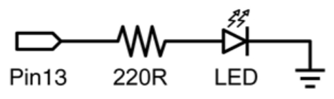
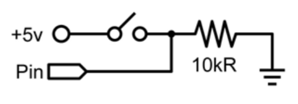
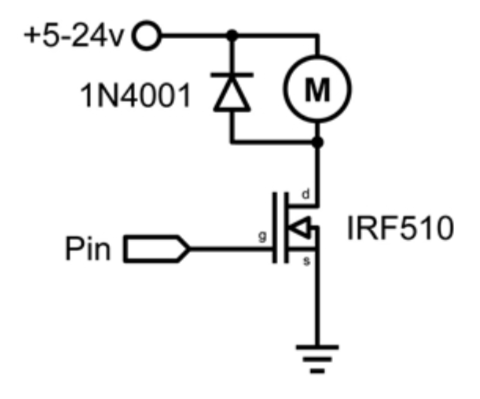
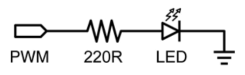
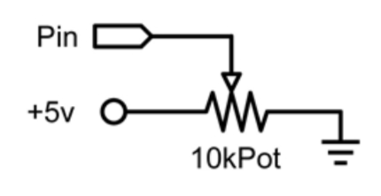
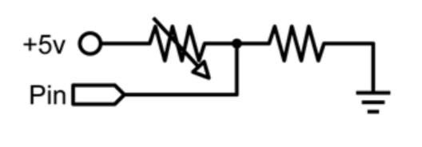
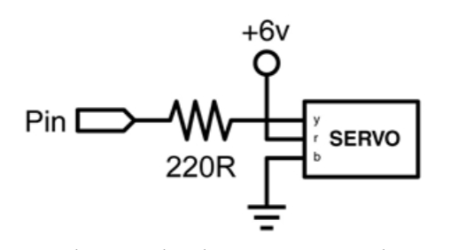

Este es el ejemplo básico equivalente al "hola mundo" de cualquier lenguaje de programación haciendo simplemente el encendido y apagado de un LED. En este ejemplo el LED está conectado en el PIN13, y se enciende y apaga “parpadea” cada segundo.

La resistencia que se debe colocar en serie con el LED en este caso puede omitirse ya que el pin13 de Arduino ya incluye en la tarjeta esta resistencia.
int ledPin = 13; // LED en el pin digital 13
void setup()
{
pinMode(ledPin, OUTPUT); // Configura el pin 13 como salida
}
void loop()
{
digitalWrite(ledPin, HIGH); // Activa el LED
delay(1000); // Espera 1 segundo
digitalWrite(ledPin, LOW); // Desactiva el LED
delay(1000); // Espera 1 segundo }
Esta es la forma más sencilla de entrada con sólo dos posibles estados: encendido o apagado.

En este ejemplo se lee un simple switch o pulsador conectado a PIN2. Cuando el interruptor está cerrado el pin de entrada se lee HIGH y encenderá un LED colocado en el PIN13.
int ledPin = 13; // Pin 13 asignado para el LED de salida
int inPin = 2; // Pin 2 asignado para el pulsador
void setup() // Configura entradas y salidas
{
pinMode(ledPin, OUTPUT); // Declara LED como salida
pinMode(inPin, INPUT); // Declara pulsador como entrada
}
void loop()
{
if (digitalRead(inPin) == HIGH) // Testea si la entrada esta activa
{
digitalWrite(ledPin, HIGH); // Enciende el LED
delay(1000); // Espera 1 segundo
digitalWrite(ledPin, LOW); // Apaga el LED
}
}
A veces es necesario controlar cargas de más de los 40 mA que es capaz de suministrar la tarjeta Arduino. En este caso se hace uso de un transistor MOSFET que puede alimentar cargas de mayor consumo de corriente. El siguiente ejemplo muestra como el transistor MOSFET conmuta 5 veces cada segundo.

Nota: El esquema muestra un motor con un diodo de protección por ser una carga inductiva. En los casos que las cargas no sean inductivas no será necesario colocar el diodo.
int outPin = 5; // Pin de salida para el MOSFET
void setup()
{
pinMode(outPin, OUTPUT); // Pin5 como salida
}
void loop()
{
for (int i=0; i<=5; i++) // Repetir bucle 5 veces
{
digitalWrite(outPin, HIGH); // Activa el MOSFET
delay(250); // Espera 1/4 segundo
digitalWrite(outPin, LOW); // Desactiva el MOSFET
delay(250); // Espera 1/4 segundo
}
delay(1000); // Espera 1 segundo
}
La Modulación por Ancho de Pulsos (PWM) es una forma de conseguir una “falsa” salida analógica. Esto podría ser utilizado para modificar el brillo de un LED o controlar un servo motor. El siguiente ejemplo lentamente hace que el LED se ilumine y se apague haciendo uso de dos bucles.

int ledPin = 9; // Pin PWM para el LED
void setup() // No es necesario configurar nada
{
}
void loop()
{
for (int i=0; i<=255; i++) // El valor de i asciende
{
analogWrite(ledPin, i); // Se escribe el valor de i en el PIN del LED
delay(100); // Espera durante 100ms
}
for (int i=255; i>=0; i--) // El valor de i desciende
{
analogWrite(ledPin, i); // Se escribe el valor de i
delay(100); // Espera durante 100ms
}
}
El uso de un potenciómetro y uno de los pines de entrada analógica-digital de Arduino (ADC) permite leer valores analógicos que se convertirán en valores dentro del rango de 0-1024.

El siguiente ejemplo utiliza un potenciómetro para controlar el tiempo de parpadeo de un LED.
int potPin = 0; // Pin entrada para potenciómetro
int ledPin = 13; // Pin de salida para el LED
void setup()
{
pinMode(ledPin, OUTPUT); // Declara ledPin como SALIDA
}
void loop()
{
digitalWrite(ledPin, HIGH); // Pone ledPin en ON
delay(analogRead(potPin)); // Detiene la ejecución un tiempo “potPin”
digitalWrite(ledPin, LOW); // Pone ledPin en OFF
delay(analogRead(potPin)); // Detiene la ejecución un tiempo “potPin”
}
Las resistencias variables como los sensores de luz LCD los termistores, sensores de esfuerzos, etc. Se conectan a las entradas analógicas para recoger valores de parámetros físicos.

Este ejemplo hace uso de una función para leer el valor analógico y establecer un tiempo de retardo. Este tiempo controla el brillo de un diodo LED conectado en la salida.
int ledPin = 9; // Salida analógica PWM para conectar a LED
int analogPin = 0; // Resistencia variable conectada a la entrada analógica pin 0
void setup() // No es necesario configurar entradas y salidas
{
}
void loop()
{
for (int i=0; i<=255; i++) // Incremento de valor de i
{
analogWrite(ledPin, i); // Configura el nivel brillo con el valor de i
delay(delayVal()); // Espera un tiempo
}
for (int i=255; i>=0; i--) // Decrementa el valor de i
{
analogWrite(ledPin, i); // Configura el nivel de brillo con el valor de i
delay(delayVal()); // Espera un tiempo
}
}
int delayVal() // Método para recoger el tiempo de retardo
{
int v; // Crea una variable temporal (local)
v = analogRead(analogPin); // Lee valor analógico
v /= 8; // Convierte el valor leído de 0-1024 a 0-128
return v; // Devuelve el valor v
}
Los servos de los juguetes tienen un tipo de motor que se puede mover en un arco de 180º y contienen la electrónica necesaria para ello.

Todo lo que se necesita es un pulso enviado cada 20ms. Este ejemplo utiliza la función servoPulse para mover el servo de 10º a 170º.
int servoPin = 2; // Servo conectado al pin digital 2
int myAngle; // Ángulo del servo de 0-180
int pulseWidth; // Anchura del pulso para la función servoPulse
void setup()
{
pinMode(servoPin, OUTPUT); // Configura pin 2 como salida
}
void servoPulse(int servoPin, int myAngle)
{
pulseWidth = (myAngle * 10) + 600; // Determina retardo
digitalWrite(servoPin, HIGH); // Activa el servo
delayMicroseconds(pulseWidth); // Pausa
digitalWrite(servoPin, LOW); // Desactiva el servo
delay(20); // Retardo de refresco
}
void loop()
{
// El servo inicia su recorrido en 10º y gira hasta 170º
for (myAngle=10; myAngle<=170; myAngle++)
{
servoPulse(servoPin, myAngle);
}
// El servo vuelve desde 170º hasta 10º
for (myAngle=170; myAngle>=10; myAngle--)
{
servoPulse(servoPin, myAngle);
}
}